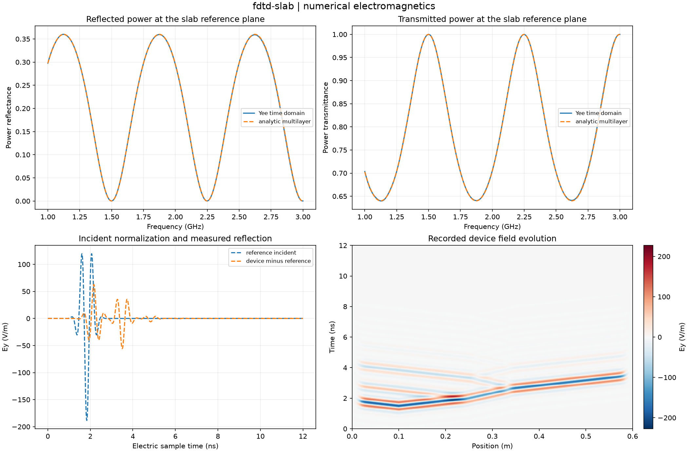

Reproducible numerical electromagnetics. Units and field components are printed on the scientific axes. Peak phasors use exp(+i omega t); outgoing waves use exp(-i k r).
Sealed numeric archive | Summary CSV | Physical parameters | Run request | Source and environment

| final_device_peak_e_v_m | 0.055663564201957 |
|---|---|
| maximum_absorption_error | 0.0015265855870097989 |
| reflection_complex_relative_l2 | 0.004371620720684954 |
| transmission_complex_relative_l2 | 0.003337956230704554 |
| valid_frequency_points | 201 |
These are simulations, not hardware measurements. Mesh, boundary, truncation and statistical uncertainty require distinct convergence checks. Singular or unilluminated data use explicit masks.
Source revision: 255b9ec965941d1fc97a04b9f7e2101e959fbeca.
Dirty checkout: False.
Configuration SHA-256: 48e020b4046042b553ef3f21a3081fc4c636c6aeeaa7d4b835cd7b2dbcbfda62.
Replay preserves original source and parameter provenance. SHA-256 manifests detect changed bytes; they are unsigned integrity records, not certificates of physical validity.